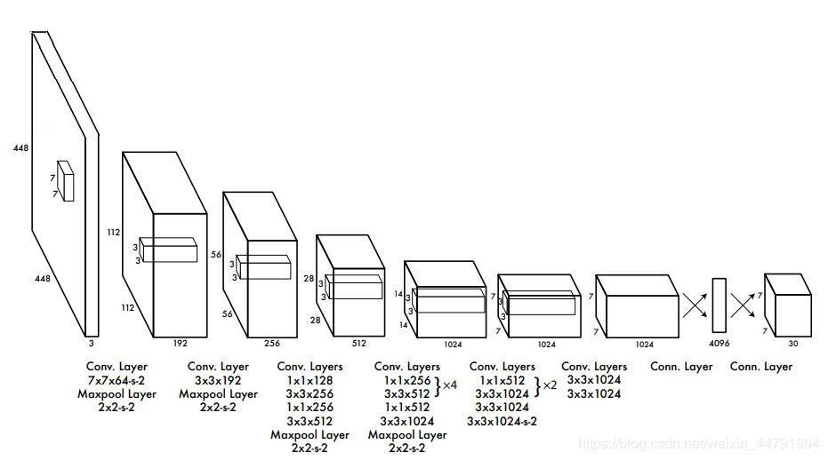
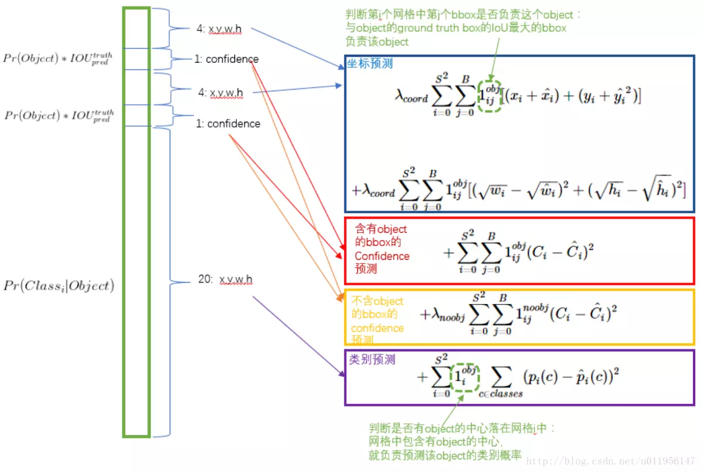
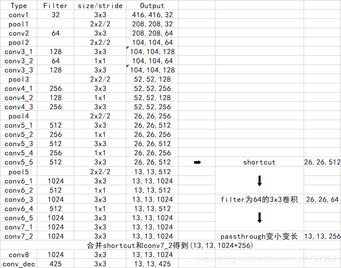
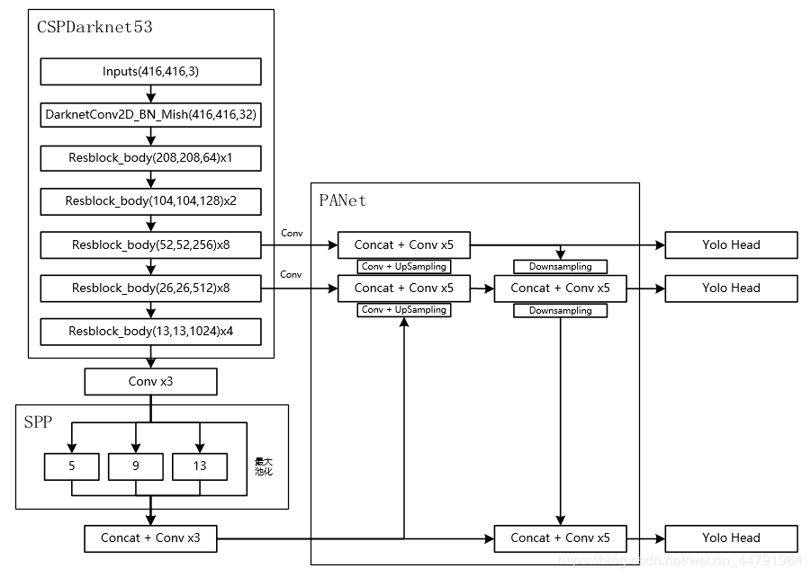

YOLO的全拼是You Only Look Once，顾名思义就是只看一次，把目标区域预测和目标类别预测合二为一，该方法采用单个神经网络直接预测物品边界和类别概率，实现端到端的物品检测。
Yolo v1
这是YOLO系列的第一篇，文章发表在CVPR2016上，论文链接:YOLOV1.
摘要指出了文章的主要创新之处：把分类问题转换为回归问题，使用一个卷积神经网络就可以直接预测物体的bounding box和类别概率。
算法的优点有很多：
- 速度快，Titan X: 45fps。加速版则能达到150fps。
- 基于全局信息检测而不是生成region proposal的方法，可以将背景误检率降低一半（把背景识别成物体）。
- 泛化能力较强，在艺术作品上有较好的结果。


Yolo v2

Yolo v3

Yolo v4

- 主干特征提取网络：DarkNet53 => CSPDarkNet53
- 特征金字塔：SPP，PANet
- 分类回归层：YOLOv3（未改变）
- 训练用到的小技巧：Mosaic数据增强、Label Smoothing平滑、CIOU、学习率余弦退火衰减
- 激活函数：使用Mish激活函数